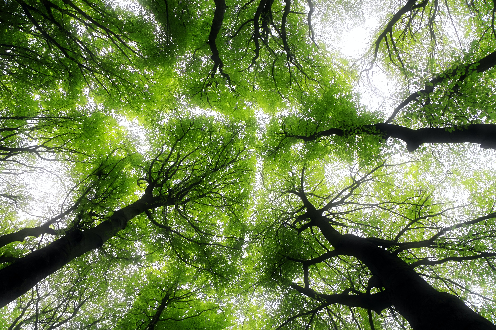

Poverty and environmental degradation are intrinsically linked. By healing the environment, we can heal lives as well.
Get Started in Your Community
Curious about what you can do in your neighborhood? Download our free eBook to find out.

Take Part in our Green Thumb Initiative
Community gardens are an excellent opportunity to provide for the needy in your neighborhood, while also providing a chance to educate young people about how food is grown.